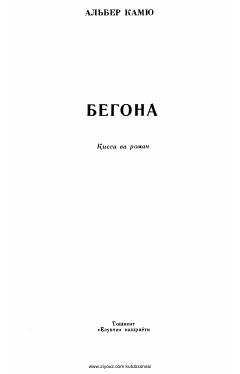

VOran shahrida tarqalgan vabo epidemiyasi fonida inson matonati va hayot mazmuni haqida hikoya.
Alber Kamyuning ushbu mashhur romanida Oran shahrida tarqalgan vabo epidemiyasi va uning insonlar hayotiga ta'siri tasvirlanadi. Asar insonning og'ir sinovlar qarshisidagi matonati, axloqiy tanlovlari va hayotning ma'nosi haqidagi chuqur falsafiy mushohadalarni o'z ichiga oladi.